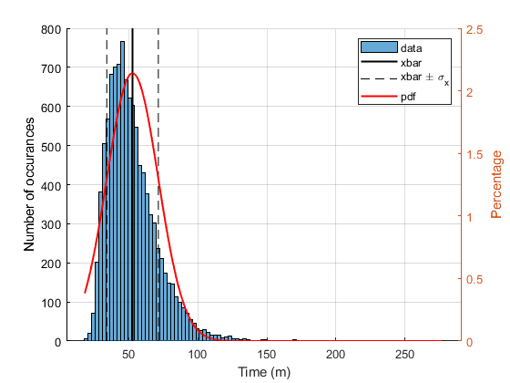

Contents
% Author(s): Andrew Patella % Assignment title: 2012 Coding challenge 1 % Purpose: Analyze data from Sanitas hike % Creation date: 9/25/2023 % Revisions: clear; clc; close all; %Read in the data, storing it in a matrix titled 'time' time = readmatrix('sanitas_times'); %Empty any NaN from the data time(isnan(time)) = [];
Calculate Mean and Standard Deviation using a for loop
%Creating a variable that is the length of time for the summation for loop N=length(time); %Setting the initial value of the sum to zero for the for loop sum1 = 0; tic %starting timing %For loop to sum all values of time for i = 1: N sum1 = time(i) + sum1; end %Calculating the mean from the sum value and N xbar_1 = sum1/N; sigma_sum=0; %setting the initial value of the sum %calculating the sum part of the sigma calculation for i = 1:N sigma_sum=(time(i)-xbar_1).^2+sigma_sum; end %Calculating sigma sigma_1 = sqrt((1/(N-1))*sigma_sum); code_run_time = toc; %ending timing
Calculate using Sum() function
%calculating the mean xbar_2 = sum(time)/N; %calculating the sum part of the sigma sigma_sum_2 = sum((time-xbar_2).^2); %calculating sigma sigma_2 = sqrt((1/(N-1))*sigma_sum_2);
Calculating using mean() and std()
%Using mean function to find the mean xbar_3 = mean(time); %using the mean functoin to calculate sigma sigma_3 = std(time);
Standard Error of the Mean, PDF
SEM = sigma_1/sqrt(N); %x is the range of x values of times, from xmin to xmax. This is a linearly %spaced array of values to plug into pdf formula x_min = min(time); x_max = max(time); x_pdf= linspace(x_min,x_max,10000); %calculating pdf value at each value of x f = 100/(sigma_1 * sqrt(2*pi)) * exp(-1/2 * ((x_pdf-xbar_1)/sigma_1).^2);
Plotting the results
figure(1); hold on; %making sure all lines show up on the same figure histogram(time,100); %Plotting the histogram with 100 bins line([xbar_1, xbar_1],[0,max(ylim)],'color','k','linewidth',1.5); %Plotting a vertical line at x_bar line([xbar_1+sigma_1, xbar_1+sigma_1],[0,max(ylim)],'Color','k','LineStyle','--'); %plotting the x_bar pm sigma as vertial lines line([xbar_1-sigma_1, xbar_1-sigma_2],[0,max(ylim)],'Color','k','LineStyle','--'); ylabel('Number of occurances'); %labels for the axes xlabel('Time (m)'); yyaxis right; %Setting up a second y axis so the pdf graphs visibly plot (x_pdf,f,'color', 'red','linewidth',1.5); %plotting the pdf against the time x_pdf ylabel('Percentage'); %label for the axis grid on; %turing on the grid legend('data','xbar','xbar \pm \sigma_x','','pdf') %creating a legend hold off;
Questions
%The times do seem to be normally distributed. They loosely follow the %shape of the normal curve. I believe that the data is slightly skewed %since the only people who really use Strava are more athletic, so the %fast time the data represents may not actually represent the true data of %climb times. There are come gaps between the curve and the histogram, but %it matches the data pretty well. I believe that with more data from more %people, the data would begin to look a lot more like the curve.